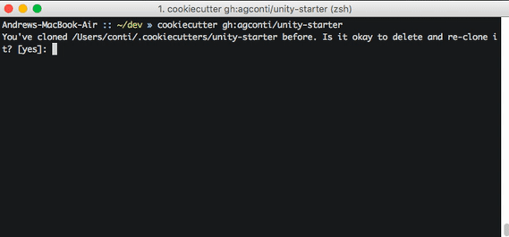

unity-starter
Clone this repo to quickly setup a Unity project that plays nice source control and GitHub.
Dependencies
-
Python
brew install python
Quick Start
Install cookiecutter:
pip install cookiecutterScaffold your project:
cookiecutter gh:agconti/unity-starter
